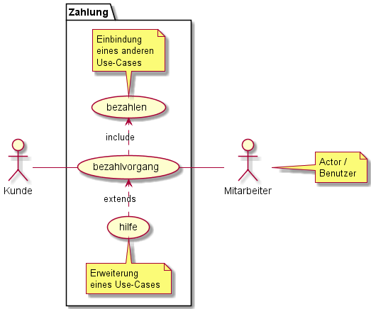
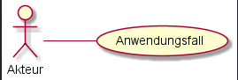
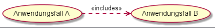
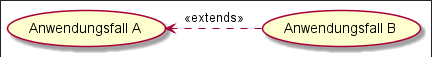
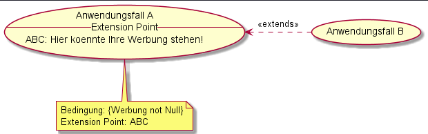

Das Anwendungsfalldiagramm, oder auch Nutzfalldiagramm, wird genutzt um Anwendungsfälle und deren Akteure mit ihren jeweiligen Abhängigkeiten und Beziehungen darzustellen.
Es zählt zur Gruppe der Verhaltensdiagramme und stellt das erwartete Verhalten eines Systems dar. Das Diagramm soll dabei helfen, die Anforderungen an ein System sichtbar zu machen und zu definieren. In einem Anwendungsfalldiagramm ist die Ablaufsreihenfolge daher nicht relevant und wird in anderen Diagrammen dargestellt.
UML Anwendungsfalldiagramme werden verwendet um:
Unter Komponenten verstehen wir die einzelnen Bausteine, die verwendet werden um das Diagramm in frage darzustellen.
Actor
System
Use-Case / Anwendungsfall

Beziehungen zwischen Akteuren und Use-Cases werden mit Verbindungslinien gekennzeichnet.
Eine durchgezogene Linie zwischen Akteur und Use-Case offenbart eine Beziehung zwischen beiden.

Beziehungen die durch eine gestrichelte Linie gekennzeichnet werden, können verschiedene Assoziationsarten darstellen:
Der Fall A, von dem die Linie ausgeht, bindet den Fall B, zu dem die Pfeilspitze zeigt mit ein.

Der Fall A, auf den die Pfeilspitze zeigt, kann den Fall B, von dem die Linie ausgeht, unter bestimmten Bedingungen mit einbinden.

Da die Ausführung bei einer extend-Assoziation immer von einer Bedingung abhängig ist, muss diese Bedingung als Erweiterungspunkt / Extension-Point dargestellt werden.

Wie im oberen Bild zu sehen ist, wird bei einer Extension, die ja an eine Bedingung gebunden ist, diese als Notiz beigefügt.
Sie arbeiten für die Firma Datenkrake AG. Ihre Firma möchte von Ihnen ein ein Anwendungsfalldiagram für die neue Firmenseite. Sie bekommen folgende Informationen über geplante Funktionalität der Webseite:
Sie dürfen über die Aufgabenstellung hinaus weitere angemessene Annahmen selbst treffen.
Zeitrahmen: 60 Minuten
Erstellen Sie ein Anwendungsfalldiagramm für typische Prozesse in einem Restaurant.️
Sie dürfen bei dieser Aufgabe Ihrer Kreativität freien lauf lassen und eigene Annahmen treffen. Mut zu Lücke! 🚀